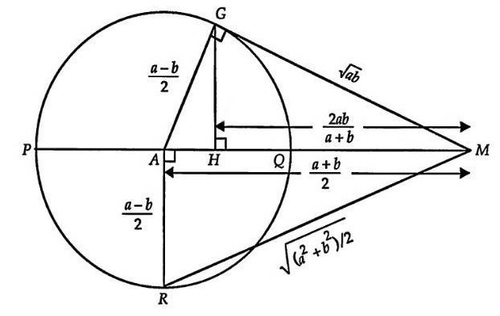

均值不等式简介
作者：钫酸的祝福
对于 个数，可以定义它们的若干平均数：
被称为调和平均数。
被称为几何平均数。
被称为算术平均数。
被称为平方平均数（或均方根）。
对于这些平均数来说，有下面的不等式成立：
该不等式被称为均值不等式。即调和平均数不超过几何平均数，几何平均数不超过算术平均数，算术平均数不超过平方平均数，简记为“调几算方”。
一般形式
设函数
将 r 视为连续的，可证，，于是 是 上的（非严格）单调递增函数。于是， 时，
下面在二元情况下推导 ，不妨设 ，构造
考虑分子：
于是，而 是单调增函数，于是， .
考虑到
可以注意到， 仅是上述不等式的特殊情形。
几何意义
设PM=a，QM=b，然后其他每一段长度就可以表示出来的，比如AM=AQ+QM，即等于一个半径+QM，而PM等于两个半径加QM，所以AM=（a+b）/2，同理半径AG=AR=（a-b）/2，然后在直角三角形AGM中，可以用射影定理知二求四，或者可以用勾股定理和等面积法求出GM和GH（甚至GH、AH等长度），还有RM的长度，然后由斜边大于直角边就可以得到四个不等式了，而如果R点和G点与Q点重合的时候就可以取等号，这样四个不等式一下子就证明了。
